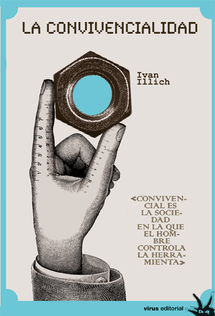

Iván Illich
Biografía

Iván Illich (Viena, 1926 – Bremen, 2002) fue un pensador austríaco, sacerdote católico, teólogo y crítico radical de las instituciones modernas. Hijo de padre croata y madre judía sefardí, creció en un entorno multicultural. Estudió en Florencia y Roma, se ordenó sacerdote en 1951 y trabajó con comunidades puertorriqueñas en Nueva York.
En 1961 fundó el CIDOC en Cuernavaca, México, un centro de formación alternativa que se convirtió en un foro intelectual global. Renunció al sacerdocio en 1969 tras críticas al Vaticano. Vivió de forma austera, enseñando en universidades de Europa y América, y escribió más de 20 libros sobre educación, medicina, tecnología y trabajo.
Obras Principales
- La sociedad desescolarizada (1971)
 Crítica a la escolarización obligatoria. Propone redes de aprendizaje libre y comunitario, eliminando la institución escolar como monopolio del saber.
Crítica a la escolarización obligatoria. Propone redes de aprendizaje libre y comunitario, eliminando la institución escolar como monopolio del saber. - La convivencialidad (1973)

Defiende "herramientas conviviales" que empoderen al individuo frente a tecnologías alienantes que generan dependencia y desigualdad. - La iglesia sin poder (1955-1985)
 Son una serie de textos y conferencias reunidos póstumamente, que lanzan una crítica radical a la Iglesia católica institucional de los años 60.
Son una serie de textos y conferencias reunidos póstumamente, que lanzan una crítica radical a la Iglesia católica institucional de los años 60. - Némesis médica. La expropiación de la salud (1975)
 Acusa a la medicina industrial de crear enfermedades ("iatrogenia"). Propone salud autónoma y comunitaria.
Acusa a la medicina industrial de crear enfermedades ("iatrogenia"). Propone salud autónoma y comunitaria. - Profesiones inhabilitantes (1981)
 Analiza el "trabajo sombra" no pagado (consumo, tareas domésticas) que sostiene el capitalismo moderno.
Analiza el "trabajo sombra" no pagado (consumo, tareas domésticas) que sostiene el capitalismo moderno. - El derecho al desempleo útil y sus enemigos profesionales (2015)
 Se plantea una idea provocadora y profundamente anticapitalista: en la sociedad industrial moderna, el empleo formal se ha convertido en una obligación ya que paradójicamente, la mayoría de las personas pasan gran parte de su vida realizando trabajo no remunerado pero imprescindible para que el sistema funcione.
Se plantea una idea provocadora y profundamente anticapitalista: en la sociedad industrial moderna, el empleo formal se ha convertido en una obligación ya que paradójicamente, la mayoría de las personas pasan gran parte de su vida realizando trabajo no remunerado pero imprescindible para que el sistema funcione.